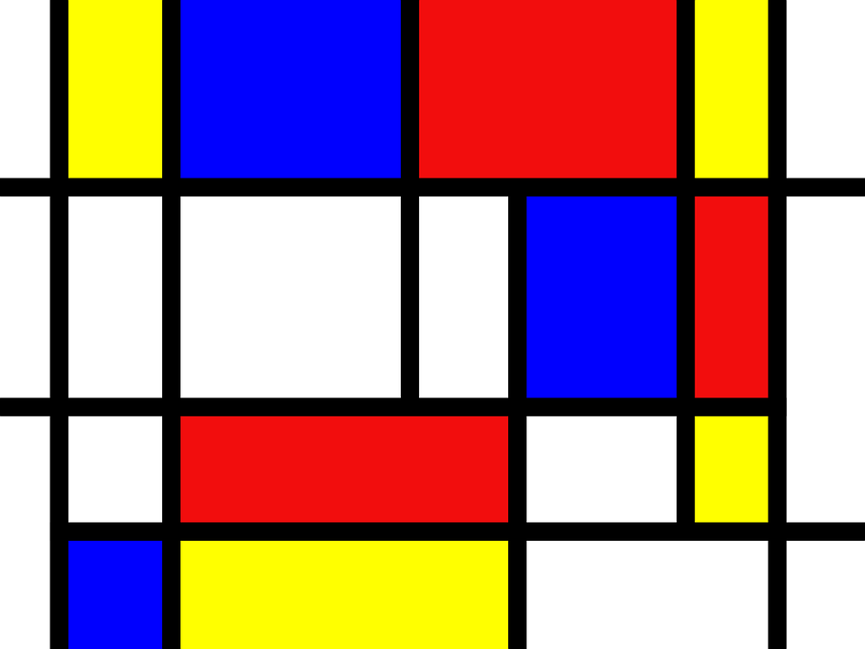
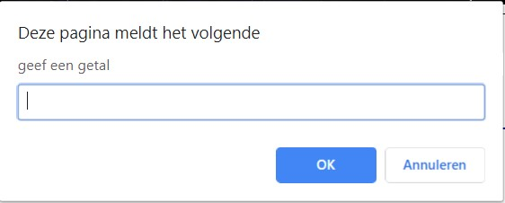

Project Vlaggen

Bij dit project moesten wij met HTML en CSS vlaggen maken. Hierbij lag de focus vooral bij flag boxing.
Project Mondriaan

Bij dit project moesten wij een schilderij van Piet Mondriaan na maken met HTML en CSS. Hierbij was flag boxing ook belangerijk.
Project JavaScript

Bij deze opdracht moesten wij met JavaScript een soort van rekenmachine maken. Deze opdracht is wel 1 van mijn favorieten.